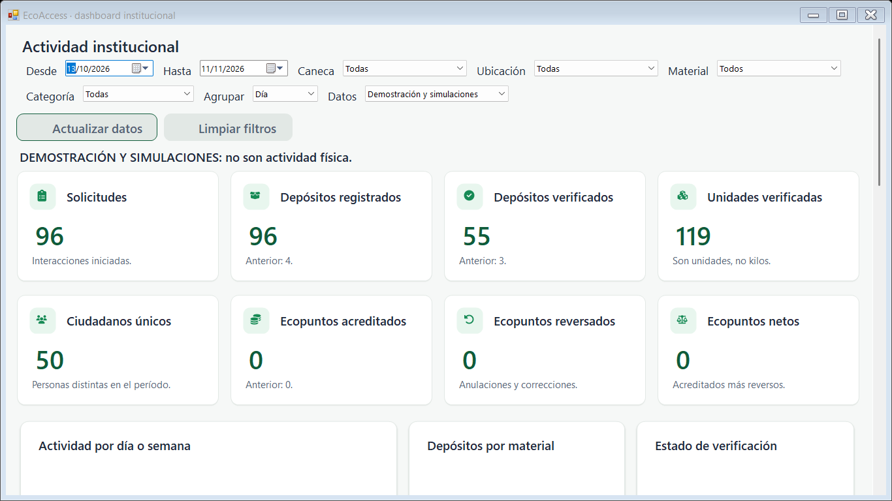

Documento maestro de cierre definitivo: software, integración, validación y documentación académica
Programación de Computadores III (SS462) · Proyecto de aula · Noviembre de 2026
Rama desarrollo/telegram-doble-ia, PR #11. Base: Oracle Autonomous Database 19c (Bogotá), esquema ECOACCESS_P3_APP. Las cifras de este documento provienen de pruebas y consultas ejecutadas el 10 y el 11 de noviembre de 2026; cuando algo no está validado, se dice.
EcoAccess P3 orienta y registra la separación de residuos en la fuente según la Resolución 2184 de 2019. La persona escanea un QR, envía una foto por Telegram y el sistema le indica a qué caneca va el residuo (blanca, verde o negra). Cuando hay dispositivo, abre la tapa correcta durante 10 segundos. La administración se hace en Windows Forms contra Oracle Cloud.
En este cierre se completaron:
| Indicador | Valor |
|---|---|
| Compilación de la solución | 0 errores |
| Pruebas unitarias | 1 760 aprobadas, 1 omitida, 0 fallidas |
| Pruebas de integración (esquema aislado) | 211 aprobadas, 7 inconclusas por diseño, 0 fallidas |
| Concurrencia 1/10/20/30 personas | 0 errores |
| Visión, ronda independiente | 119/141 (84 %), 0 falsas admisiones (meta del 90 % no alcanzada) |
| Objetos inválidos en Oracle al cierre | 0 |
Tres capas más entidades, en .NET Framework 4.8 y C# 9:
ControlAcceso.La comunicación con la caneca pasa por ICanalDispositivo (simulador, HTTP local o serial USB). Lo que ocurrió en la caneca lo prueban los eventos del dispositivo, no el envío de la orden.
Cada migración aplicada en la nube queda en ECO_MIGRACION_APLICADA con su huella SHA-256. En esta misión:
| Migración | Contenido | Efecto medido en la nube |
|---|---|---|
| V024 | Estación piloto de tres canecas con el QR oficial | CONTENEDOR 4→6, CONFIGURACION_CANECA 3→6, CONTENEDOR_MATERIAL 30→46 |
| V025 | LOTE_SIMULACION, REGISTRO_SIMULACION, VISTA_DEPOSITOS_ESTADO, VISTA_LOTES_SIMULACION | 2 tablas y 2 vistas nuevas; ninguna otra tabla cambió |
Hay 8 consultas de demostración en database/04_consultas/11_consultas_cierre.sql. Las 8 se ejecutaron sin errores en Oracle Cloud.
| Operación | Ciudadano | Operario | Administrador |
|---|---|---|---|
| Mis ecopuntos y mis estadísticas | Sí | No | No |
| Buscar ciudadanos, estadísticas generales, reglas, ecopuntos de otros | No | Sí | Sí |
| Usuarios y roles, materiales, reglas nuevas, informe institucional, diagnóstico Oracle | No | No | Sí |
La matriz vive en MatrizPermisos. MatrizPermisosTests la comprueba contra los servicios reales; cuando se alteró a propósito, la prueba falló.
Las contraseñas usan PBKDF2. Las órdenes al ESP32 usan HMAC, idempotencia y vencimiento. Una prueba recorre el repositorio y confirma que no hay claves de Groq, tokens de bot ni contraseñas.
El QR oficial EcoAccessCanecaPiloto1 identifica la caneca blanca del piloto. De ella se toma la estación, y ResolutorDestino elige el destino:
La caneca 1093 conserva su QR y su estado. Las canecas DEMO (1, 289, 290) quedan intactas. La verde y la negra del piloto están en Oracle, fuera de servicio, hasta que se instalen físicamente. Por ahora el bot indica su color y ubicación, pero no las abre por foto.
| Estado de registro | Significado |
|---|---|
| DECLARADA_SIN_SENSOR | La tapa se abrió y se cerró y la persona declaró el residuo; nadie lo comprobó. |
| DETECTADA_POR_SENSOR | El sensor registró un ingreso dentro de la ventana. |
| VERIFICADA | Un operario distinto de quien depositó confirmó el material. |
El estado se deduce de los datos (Deposito.EstadoRegistro), así que hay una sola fuente de verdad. EstacionSimulada asigna un ESP32 por tapa: una orden para la blanca no llega a la verde ni a la negra. Repetir una orden o un evento no duplica el depósito. No se cargó firmware ni se movió ningún motor.
Motores:
qwen/qwen3.8-27b, solo con el consentimiento vigente de la persona.La confianza que declara el modelo no está calibrada. Por eso una apertura exige que el nombre del objeto corrobore el material.
Cuarta ronda independiente: 141 fotos de Wikimedia Commons con licencia libre, etiquetadas antes de ejecutar el modelo.
La meta del 90 % no se alcanzó y se reporta tal cual.
Pesos. peso_medido_kg solo lo llena una báscula. Sin báscula, CatalogoPesosEstimados (versión 2026.11.10-1) calcula peso_estimado_kg por unidad declarada; una foto nunca produce un peso medido.
Ecopuntos. La matriz configurable da lata 5, PET 4, cartón 3, vidrio 3, acero 3, papel 2 y multicapa 2; el resto, 0. Los estados son Provisional, Confirmado y Anulado. Oracle Cloud tiene 0 reglas vigentes: el script T001 las crea, pero exige un administrador real como creador.
El lote SIM-2026-11-CIERRE (50 ciudadanos ficticios, 100 depósitos sintéticos) se generó con los mismos servicios del bot y una semilla fija. Así quedó separado de lo real:
REGISTRO_SIMULACION;.invalid, sin contraseña.Ejecutarlo otra vez creó 0 filas. Los informes reales muestran 0 depósitos; el modo experimental muestra 100. No son depósitos físicos ni pesajes reales.
| Estado | Blanca | Verde | Negra |
|---|---|---|---|
| DECLARADA_SIN_SENSOR | 24 | 3 | 0 |
| DETECTADA_POR_SENSOR | 14 | 1 | 0 |
| VERIFICADA | 47 | 9 | 2 |
El dashboard institucional tiene periodo, agrupación por día, semana o mes, filtros de caneca, ubicación, material y categoría, 8 indicadores y gráficos. El selector «Datos» cambia entre los datos operativos y la demostración. Capturas reales contra la nube:

Power BI: las vistas excluyen el lote por es_ensayo. No se validaron en Power BI Desktop en esta misión.
Google Forms: no existe integración y no se inventó.
La base de datos ya está en la nube. El bot corre en el PC del propietario, con una tarea que lo relanza cada 5 minutos. La VM gratuita de Oracle en Bogotá está bloqueada por falta de capacidad («Out of host capacity»). No se contrató nada: el presupuesto es US$0.
| Suite | Resultado |
|---|---|
| Unitarias | 1 760 aprobadas, 1 omitida |
| Integración (esquema aislado) | 211 aprobadas, 7 inconclusas por diseño (no se cuentan como aprobadas) |
| Integración de solo lectura (nube) | 2 aprobadas |
| Concurrencia | 1/10/20/30 altas simultáneas, 10/20/30 cuentas existentes y 30 altas consecutivas: 0 errores |